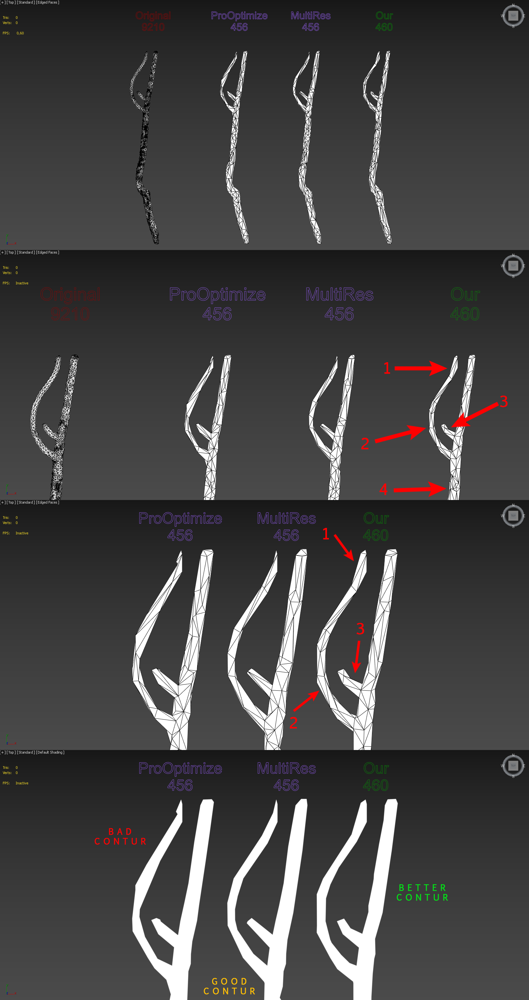
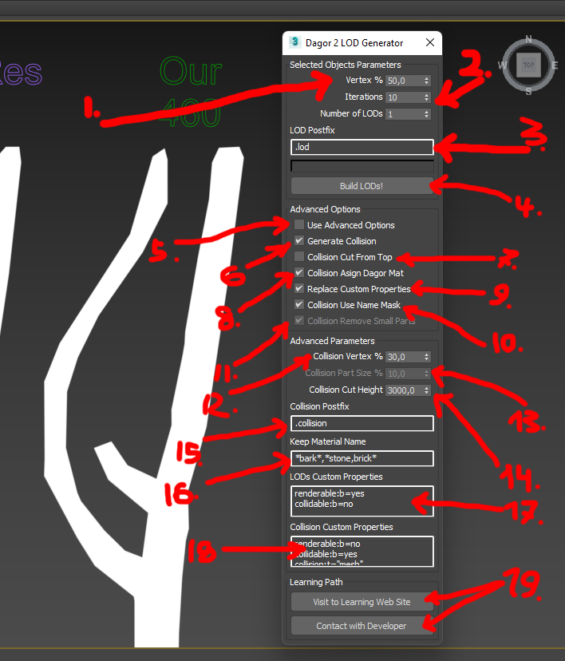
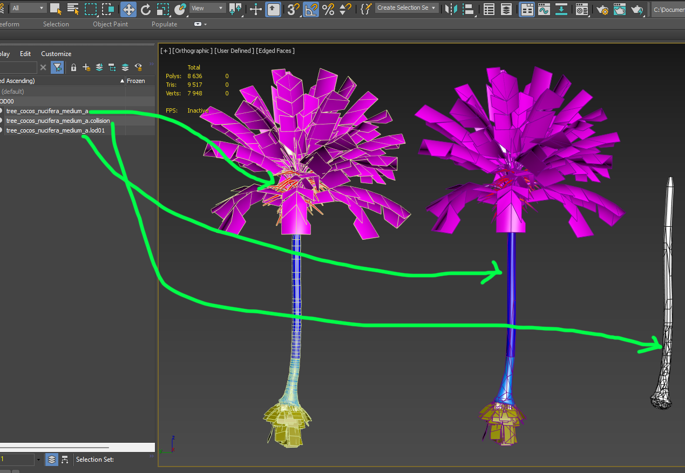
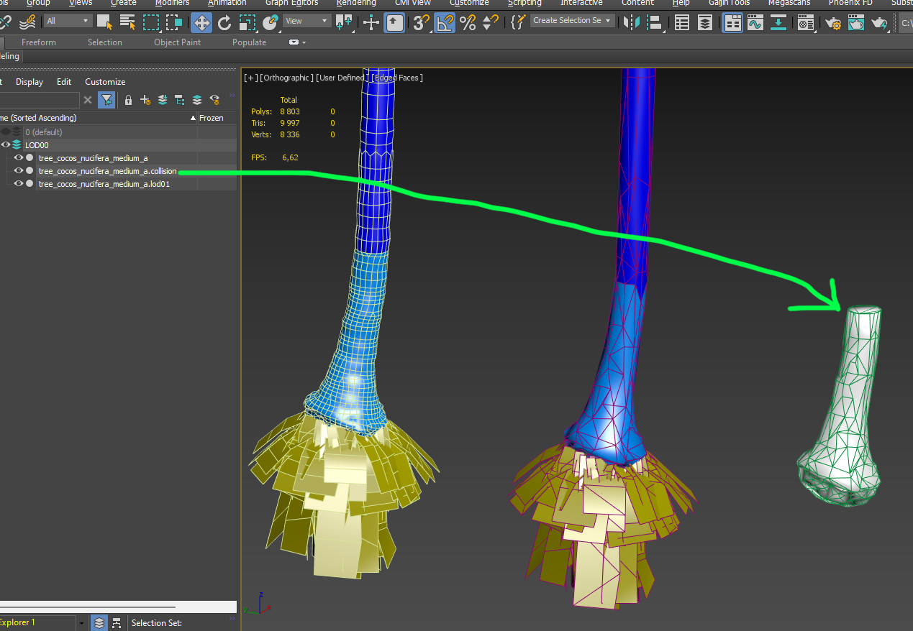

Dagor 2 LODs and Collisions Generator
Installation
Install the script following the provided instructions.
Important
This script requires 3ds Max 2018 or newer version to run.
Overview
This script provides superior triangle optimization compared to tools like MultiRes or ProOptimizer. It simplifies the process by requiring only a single button press. The script more accurately preserves texture coordinates and texture coordinate edges. Additionally, the advanced features support high-quality collision generation and specific settings tailored for the Dagor Engine.
Comparison of Optimization Quality
The following image illustrates the differences in optimization quality:

Key Advantages
More Accurate Contour Representation: The optimized model more closely follows the original object’s contours.
Increased Segment Density: More segments are generated along the radius, resulting in a finer mesh.
Enhanced Knot Detail Preservation: Critical details, such as knots, are retained, which are often lost in other optimization methods.
The script optimizes the placement of triangles more effectively, ensuring the shape of the object is conveyed with greater precision, even with the same number of triangles.
Accessing the LODs and Collisions Generator
Navigate to Gaijin Tools (1) ▸ LOD Generator…. This will open the main window of the Dagor 2 LOD Generator.
To verify the version (3) of the script, go to Gaijin Tools (1) ▸ About (2). The About window will display the current version. It’s important to check this regularly to ensure your script is up to date.

Note
Make sure that the plugin version is at least 1.4.
Using the LODs and Collisions Generator
To open the script window, navigate to Gaijin Tools ▸ LOD Generator… in the menu.

Key Parameters and Controls
Vertex % (1): Defines the percentage by which the number of triangles is reduced in each LOD. For example, LOD01 will contain 50% of the original model’s triangles, LOD02 will have 25%, and so on.
Iterations (2): Specifies the number of iterations for the optimization algorithm. Higher iterations generally yield better quality in point placement. The optimal number of 10 was determined experimentally, though in some cases, using the maximum allowable value is recommended.
Number of LODs: Specifies how many LODs will be created.
LOD Postfix (3): Sets the postfix for the names of newly optimized objects.
Build LODs! (4): Initiates the generation process. The script can batch process all selected models, creating LODs or collisions for each.
Important
Supported Model Types: The script works correctly with Edit Poly, Edit Mesh, and GrowFX model types. Other model types are not supported and may cause errors. Note that all modifiers applied to LODs and collisions will be removed if they were used on the model from which LODs or collisions are generated.
This basic functionality covers the use of MultiRes and ProOptimizer. For users familiar with these tools, the script should suffice for achieving optimal results. For more advanced collision generation and further optimization without visual quality loss, consider exploring the advanced settings detailed below.
Advanced Settings
To access advanced settings, activate the Use Advanced Options (5) checkbox. These settings provide greater control over the generation process.
Loading the Test Scene: Load the following test scene: tree_cocos_nucifera.max.
Important
This scene requires 3ds Max 2021 or a newer version.
This scene features a complex object with a Multi/Sub Material applied. It is crucial that Sub Materials are correctly named, as this influences collision generation.
Material Keyword Filtering: In Keep Material Name (16) field, you can enter keywords separated by commas to specify which materials should be retained during collision generation. For example, on a palm tree, you might exclude roots and fruits but retain anything named “bark.” Materials matching the specified keywords will be preserved, while all others, along with their associated triangles, will be removed.
Example: Highlight the palm tree, enable advanced options via checkbox (5), and enter “bark” in field (16). Run the script by clicking button (4). The result will show that all unnecessary triangles (e.g., leaves, roots, fruits) have been removed from the collision generation:

This filtering can be toggled off using Collision Use Name Mask (10) checkbox .
Warning
If the object does not have a Multi/Sub Material, the script will issue a warning and skip processing. No changes will be made in such cases.
Collision Height Cutoff: Enabling Collision Cut FromTop (7) checkbox allows you to cut off the collision mesh at a specified height, set in Collision Cut Height (14) parameter. This can be useful for optimizing performance by removing unnecessary upper parts of the collision mesh, such as branches or trunks that characters cannot interact with.
Example: Highlight the palm tree, ensure checkbox (7) is enabled, and set the desired cutoff height in parameter (14). Run the script with button (4) again to see the result:

Dagor Material Assignment: If Collision Assign Dagor Mat (8) checkbox is enabled, the collision mesh is assigned to Dagor Material 2 with the
gi_blacksetting, and the material name is set tocls.Additional Options:
Collision Generation (6): Enables or disables collision generation.
Replace Custom Properties (9): Allows replacing custom object properties with those specified in fields LODs Custom Properties (17) for LODs and Collision Custom Properties (18) for collisions. If unchecked, custom properties will be copied from the selected objects during generation.
Future Development:
Collision Remove Small Parts (11) and Collision Part Size % (13): Reserved for future updates. This feature will allow the removal of small, non-essential parts of the object (e.g., small twigs or debris) based on their bounding box size. This will help further optimize LODs and collisions.
Support
For additional assistance, buttons (19) provide quick access to this article and an option to contact the developer.